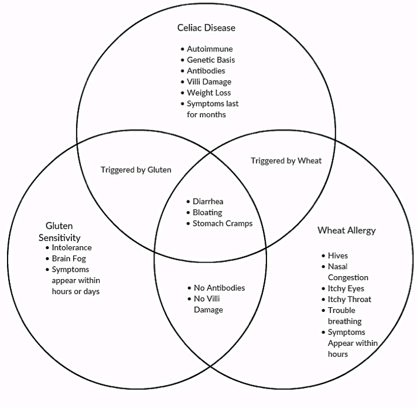

Most of us can remember hearing about new diet fads like juicing, the raw foods diet, and the baby food diet1. Yet another common diet trend is the gluten free diet. However, this trend is different: some people actually need a gluten free diet for their health. In this article, we explore the differences between Celiac disease, gluten sensitivity, and wheat allergy.
For people who suffer from Celiac disease (CD), a gluten free diet is the only effective treatment (to date)- they have to adhere to this diet for life2. However, there are two other disorders that cause similar gastrointestinal symptoms and require similar changes to the diet3. It is important to know which disorder you have, so you can follow the right course of treatment.
The word “celiac” means hollow in Greek, a reference to the trouble those with the disease have in absorbing nutrients from the diet and the weight loss that occurs because of the disease4. Your small intestine is normally lined with villi, a tissue that helps you absorb nutrients from the food you eat. Picture them as little arms extending out to grab the nutrients as they pass by.
These villi increase the surface area of your small intestine by about 30x to increase how much you can absorb from your food. In people with CD, the villi are permanently damaged and flattened out, preventing them from absorbing the nutrients from their food2. The characteristic symptoms of CD include diarrhea, weight loss, loss of appetite, vomiting, and constipation3. There are other symptoms that occur outside of the gut like stunted growth, headaches, anemia, muscle pain, and tooth enamel damage3. Back in 1950, a Dutch pediatrician showed that gluten from wheat, barely, and rye caused CD and suggested a life long gluten free diet as a potential treatment, one that is still very much in use today4.
So what is gluten, really?
A. A carbohydrate
B. A fat
C. A protein
D. A vitamin/mineral
E. Other
The correct answer is C: A protein. For people with CD, gluten isn’t fully digested and it increases the permeability of the intestinal cell wall. This increase means greater traffic across the intestinal barrier, making it is easier for gluten to get places where it isn’t supposed to be and spook the immune system, which perceives gluten as a threat, like bacteria.
CD does have a genetic component and the genes associated with CD are involved in generating an immune response. The CD variant genes are found in 99% of all CD patients and are a big part of what makes these patients susceptible to developing CD2. These patients react inappropriately to gluten, targeting it as a threat and not a normal nutrient4. CD patients produce antibodies to fight against the “foreign threats” of gluten and the small intestine molecules associated with digesting gluten which ultimately results in inflammation and permanent damage to the small intestine and the villi and a damaged ability to absorb nutrients4.
A gluten free diet is still the best treatment for CD in 2016 although researchers are working to develop other treatments and a cure. Symptoms improve following two weeks on a gluten free diet and can disappear entirely in about three months3. It takes about six months for the villi to return to normal levels and restore the small intestine to full health3.
In order to diagnose CD in patients, doctors test for the following2:
People who suffer from gluten sensitivity (GS) also benefit from a gluten free diet3. The main difference between CD and GS is that gluten sensitivity is not a result of an autoimmune response or based on genetic susceptibility 3. Think of the gluten sensitivity like a version of lactose intolerance. Both of disorders involve uncomfortable digestive symptoms in response to certain foods but neither of them are caused by an immune system response. Lactose intolerance occurs when the body fails to make enough of the enzyme lactase to properly break down lactose. The body cannot tolerate the excess intact lactose in the gut and gastrointestinal symptoms like cramps and diarrhea result. People with gluten sensitivity (GS) experience abdominal pain, bloating, and diarrhea or constipation, “foggy” mind or difficulty focusing, headaches, and fatigue within a few hours after eating gluten5. The symptoms go away once the gluten is out of the body5. The gut tissue damage isn’t permanent like it is in CD, and thus doesn’t usually cause the nutritional deficiencies that are associated with the extreme villi damage in CD3. Researchers don’t know what causes GS but think that FODMAPS (Fermentable Oligosaccharides, Disaccharides, Monosaccharides and Polyols), a group of very hard to digest carbohydrates, may be involved5.
People who suffer from a wheat allergy can also benefit from a gluten free diet, but, they only really need to avoid wheat products, not everything with gluten3. In people with wheat allergies, a specific type of antibody targets wheat as a foreign threat3. The symptoms include swelling of the nose, itching of the eyes, irritation to the throat, hives and difficultly breathing3. Anaphylaxis, a life allergic threatening response, can even occur3. Wheat allergies have similar gastrointestinal symptoms to CD, but don't cause the permanent villi damage associated with CD3.
Because the three diseases share symptoms and all respond to gluten it is often difficult to distinguish between them. It is important to determine exactly which disease you have as therisks of other complications are different with each disease and each disease has specific dietary restrictions ranging from a lifelong gluten-free diet for CD, 1-2 years of gluten avoidance for GS, and a wheat-free diet for wheat allergy. The chart below summarizes the differences and similarities between CD, GS, and wheat allergy with regard to symptoms, diagnostic information, and triggers.
Celiac Disease3:
• Malnutrition
• Extreme weight loss
• Type 1 diabetes
• Gastrointestinal cancers
• Heritability
Gluten Sensitivity:
• No known long term complications
Wheat Allergy Associated Risks:
• Anaphylaxis (severe allergic reaction)

In summary, while eating gluten free may be trendy, it can act as a medical treatment for people with Celiac Disease.
In CD patients, the body treats gluten like a foreign threat and this mistake causes discomfort and can have dangerous effects. Even though the cause of CD is unknown, genetics play an integral role and genetic tests are often one of the first steps in diagnosing CD. It's important that doctors distinguish CD from gluten sensitivity and wheat allergy so that patients get the best treatment and know the risks they face. CD patients need to be aware of any nutritional deficiencies, other autoimmune diseases, and cancer even while on a gluten free diet, whereas non-celiac gluten sensitive patients’ or wheat allergy patients’ symptoms can go away once they remove the gluten or wheat from their diet3.